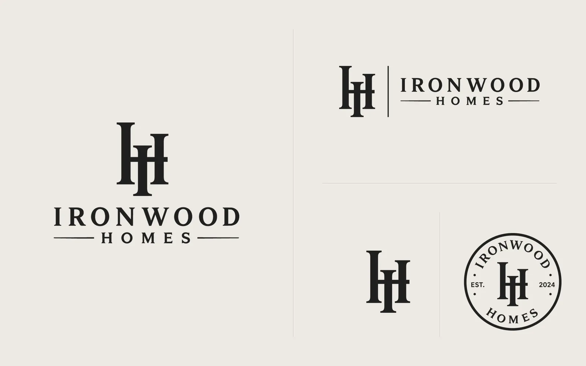
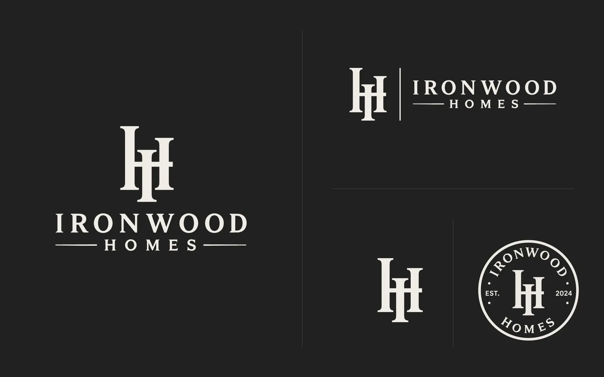
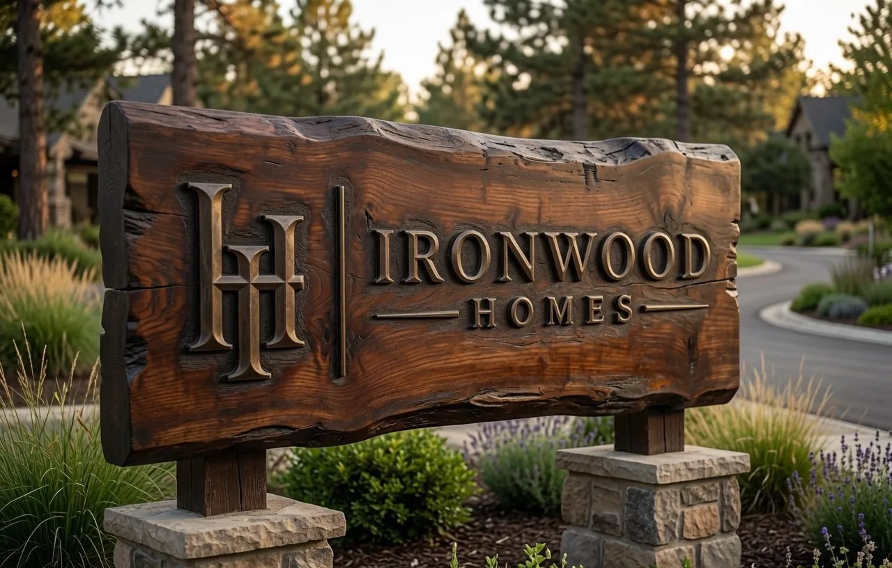

Services · Identity & branding
Build a brand with clarity, character and consistency.
A strong brand creates recognition, builds trust and gives the business a clearer direction. We build identities that feel distinctive, consistent and built to last.
- Leads with
- Logos, identity and guidelines
- Built on
- Strategy, positioning and messaging
- For
- New brands, refreshes and repositioning

Ironwood Homes: logo suite, colorways and guidelines.
Why branding
A better brand makes every other part of the business easier to strengthen.
When the identity is unclear, websites drift, messaging gets inconsistent and marketing loses cohesion. A clear brand fixes that at the source.
What we do
Identity and guidelines first. Strategy, naming and refreshes around them.

01 · Brand identity
Logos & identity
Logos that are clean, scalable and strong in print and on screen.
- Primary and secondary logos
- Responsive variations
- Icon marks
- Usage guidance
02 · Brand guidelines
Brand books & guidelines
The standards your team, partners and vendors follow with confidence.
- Logo standards
- Type and color
- Image direction
- Applications
03
Identity design & art direction
Strategy turned into a visual system, with standards for imagery and tone.
- Typography
- Color systems
- Iconography
04
Strategy
Clarify your position, audience, messaging and competitive edge.
- Positioning
- Audience definition
- Competitive analysis
05
Naming
Names that are memorable, aligned and built for long-term value.
- Company names
- Product and offer names
- Taglines
06
Rebranding
For a new goal, audience, market or stage of growth.
- Repositioning
- Growth and mergers
- New launches
Brand transformation: Ironwood Homes
The full project +

AI-directed mockup AI-directed mockup
AI-directed mockupFrom definition to expression
Discover
Your business, audience, goals and current brand landscape.
Define
Positioning, direction, messaging priorities and personality.
Design
Logo, typography, color, art direction and supporting assets.
Apply
The identity on real touchpoints, not just a presentation slide.
Document
Guidelines that keep the brand consistent as it grows.
Ongoing support
Websites, decks, campaigns and content as you grow.
Then across every channel
Why Dunn Creative
Many branding projects stop at a logo. We build the whole system.
Especially valuable for
- New businesses building a brand from the ground up
- Established companies ready for a refresh or repositioning
- Brands with inconsistent visuals or messaging
- Businesses launching new offers, products or experiences
- Teams that need clearer standards for internal and external use
AI speeds up exploration and production. It doesn’t replace strategy or creative direction.